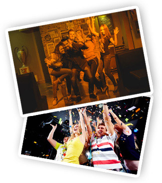

Информация о компании
Ученые-астрономы, наблюдающие за удаленной звездной системой, зафиксировали факт исчезновения из их поля зрения звезды, которая, согласно их предположениям, попала в область деформации пространственно-временного континуума, которую она сама же и создала, двигаясь по круговой орбите. "Исчезнувшая" звезда является частью бинарной системы J1906 и она является пульсаром. Это, в свою очередь, означает, что звезда является вращающейся нейтронной звездой, остатком от сверхмассивной звезды, разрушившей себя своей собственной гравитацией.
- "Исчезнувшая" звезда является частью
- "Исчезнувшая" звезда является частью
- "Исчезнувшая" звезда является частью